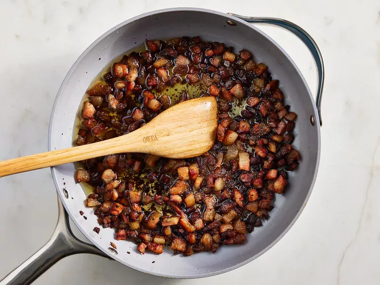

10 tablespoons grated Pecorino Romano cheese, divided
Instructions:
Heat olive oil in a large skillet over medium heat; add guanciale (see Cook's Note). Cook, turning occasionally, until evenly browned and crispy, 5 to 10 minutes. Remove from heat and drain on paper towels.

Bring a large pot of salted water to a boil. Cook spaghetti in the boiling water, stirring occasionally until tender yet firm to the bite, about 9 minutes. Drain and return to the pot. Let cool, stirring occasionally, about 5 minutes.
Whisk eggs, 1/2 of the Pecorino Romano cheese, and some black pepper in a bowl until smooth and creamy.
Pour egg mixture over pasta, stirring quickly, until creamy and slightly cooled. Stir in guanciale.
Top with remaining Pecorino Romano cheese and more black pepper.